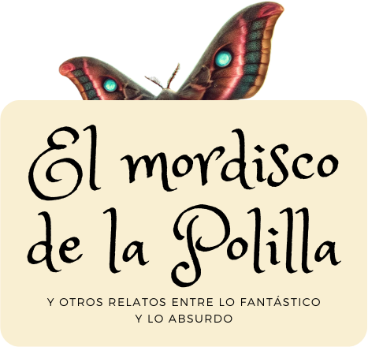

Desde sardinas con sueños de grandeza hasta dioses y misterios escondidos en lo ordinario del día a día, cada relato te sumergirá en una atmósfera mágica cargada de ironía, imaginación y sorpresas.
Una colección que desafía el mundo que conocemos y celebra lo extraordinario en lo cotidiano.
